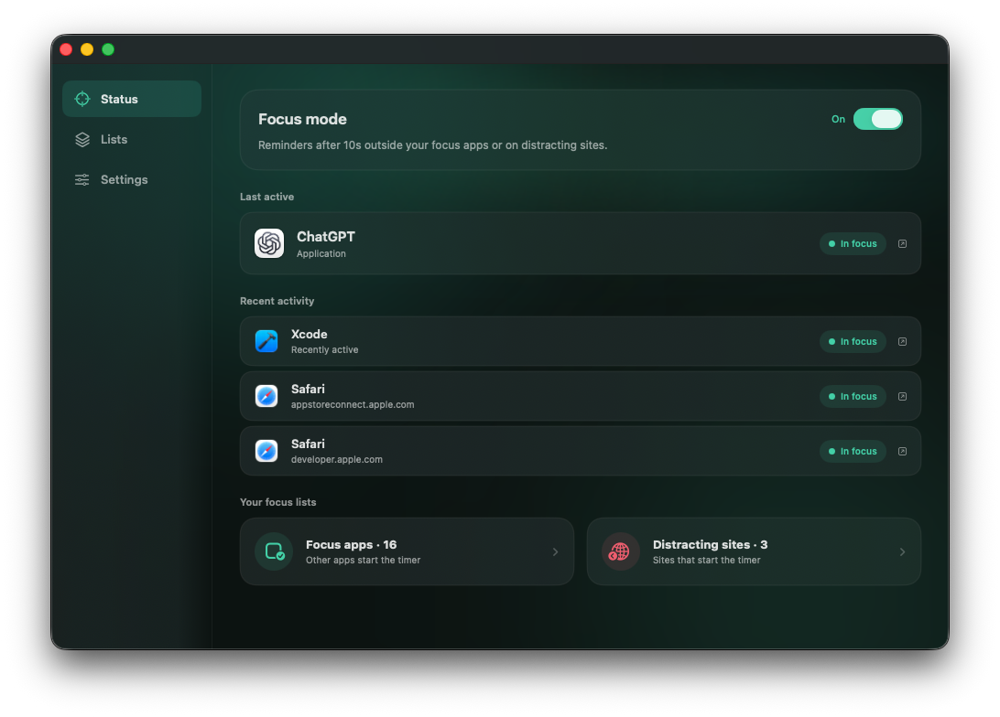
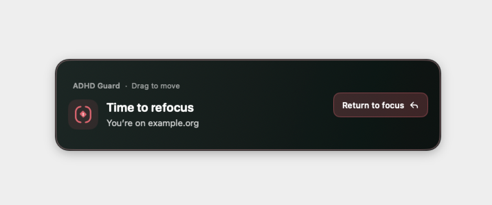
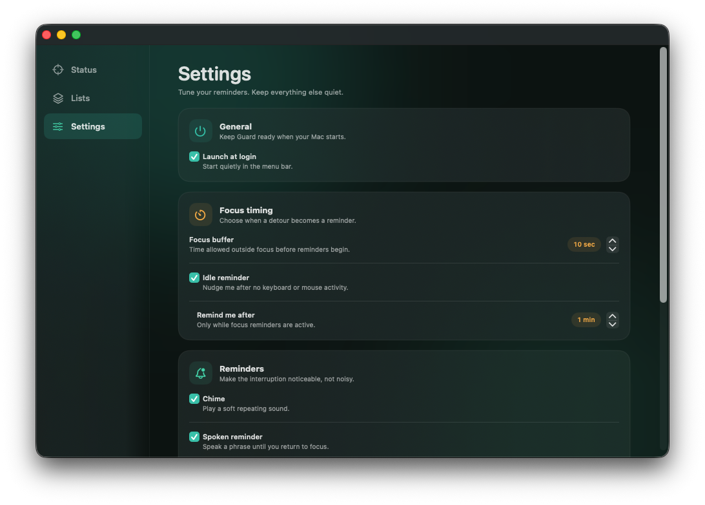

FOCUS REMINDERS FOR MAC
A little nudge.
Back to your task.
One quick check can turn into a long detour.
ADHD Guard helps you notice — and find your way back.

- Lives in your menu bar
- No account required
- Your activity stays on your Mac
A SMALL RESET
Set your focus.
Let the nudge do its thing.
Choose what matters.
Add the apps you want to work in and the websites that tend to pull you away.
Give yourself a moment.
Pick your buffer and turn on Focus mode. A quick detour only becomes a reminder when you stay away too long.
Find your way back.
When a reminder appears, choose Return to focus to bring your last focused app or browser page back into view.
FOR THE “JUST ONE MORE TAB” MOMENT
Notice the detour.
Make the next move yours.
A visible reminder helps you catch the moment you drift. Move it to a spot that works for you, then get back to the task you chose.

FOCUS, ON YOUR TERMS
Your pace.
Your kind of reminder.
Keep the visual nudge on its own, add a repeating chime, or let a spoken phrase bring you back. Make the words your own.
A buffer that fits your flow
You decide how long a detour can last before reminders begin.
Website rules that make sense
A distracting site still starts the timer inside a focus browser. Website reminders work with Safari and Google Chrome, with your Automation permission.
Close at hand, out of the way
Toggle Focus mode from the menu bar and choose to start ADHD Guard when you log in.

PERSONAL BY DESIGN
Your attention is yours.
So is your activity.
Your rules, settings and recent activity stay on your Mac. ADHD Guard does not upload your app or browsing activity. No account is required.
Read the privacy policyADHD GUARD FOR MAC
Back to what matters.
Coming to the Mac App Store.
Get in touch